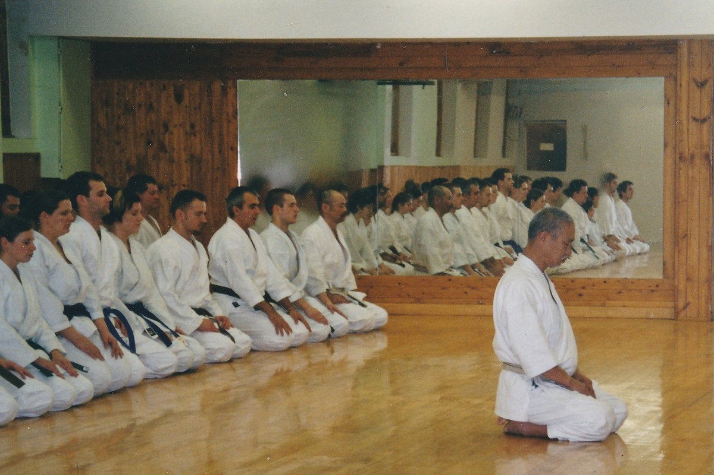
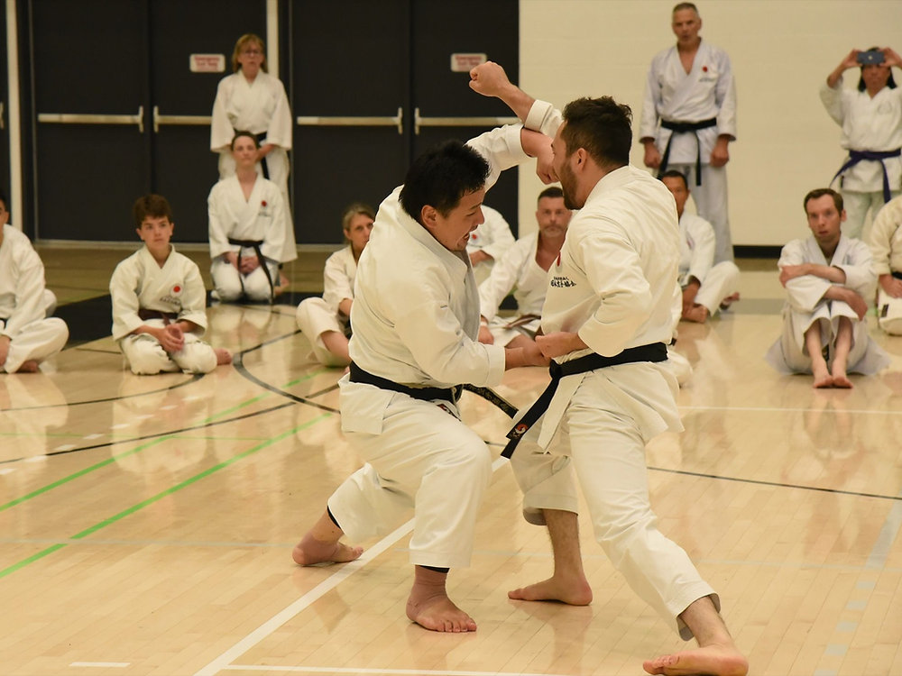
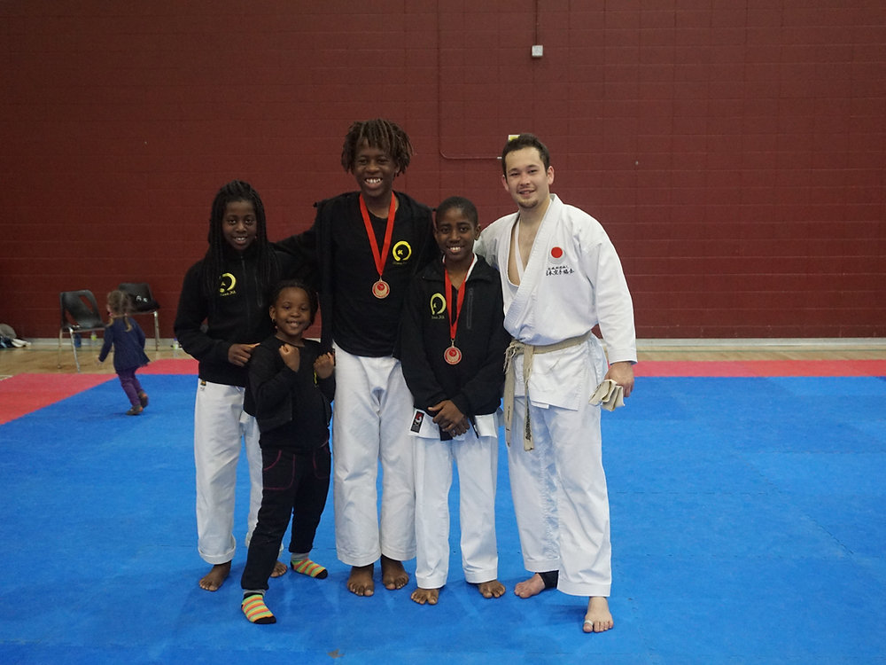
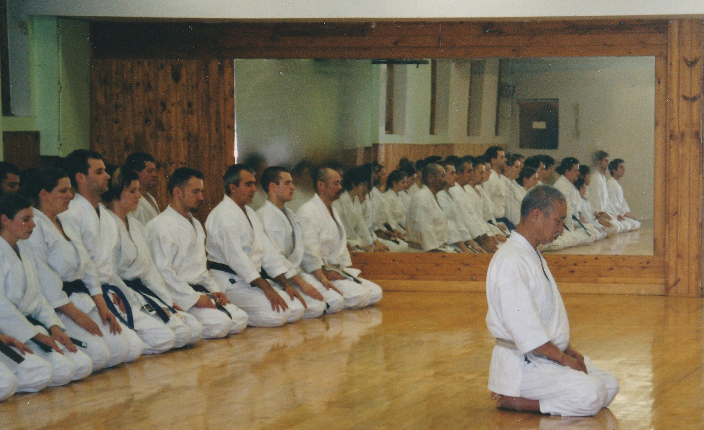

The day Nakayama came
What it meant that the man who codified modern Shotokan stood in a small Ottawa room in 1973, and what the dojo has owed that moment ever since.
Home/Journal
Writing and conversation about training, history, and the long road between Ottawa and Tokyo — plus the podcast, for the drive home.

Featured · Training
Mokuso looks like doing nothing. It is the most technically demanding part of the hour.
Newcomers treat the opening meditation as a formality to be endured before the real training starts. Seniors treat it as the first exercise. The task is not to relax — it is to arrive: to put down the commute, the inbox, the argument from this afternoon, and be entirely in a room with a wooden floor.
Everything downstream depends on it. You cannot execute a technique with kime while half of you is still in the car.
Latest
What it meant that the man who codified modern Shotokan stood in a small Ottawa room in 1973, and what the dojo has owed that moment ever since.

Three years of the JKA Headquarters programme in Tokyo, described plainly: the schedule, the injuries, and what actually changes in how you move.

Control is not the absence of power. On why the hardest skill in kumite is the one that prevents contact rather than delivering it.

Not discipline in the sense of obedience. Something narrower and more useful: the ability to stay with a boring task until it becomes interesting.

How a small annual gathering started by one instructor turned into the CJKF Summer Camp, and why people still drive twelve hours for it.

A common mistranslation, and what Saeki Sensei actually means when he asks for a mind with nothing standing in it.
Podcast
Unhurried interviews with instructors, members and visitors — the stories that do not fit into an hour on the floor.
Stay in touch
New writing, grading dates, and camp registration before it opens publicly.